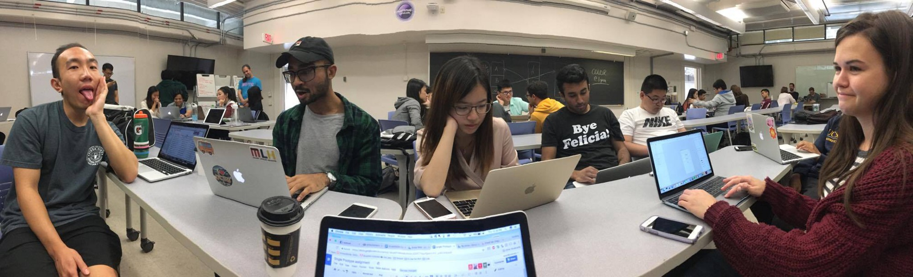
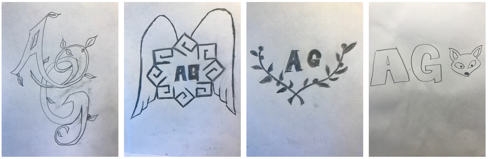
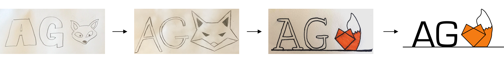
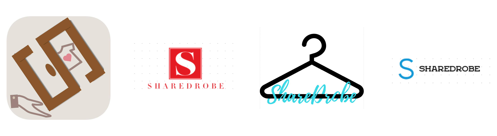
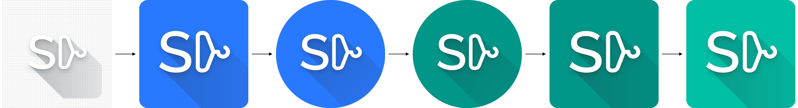
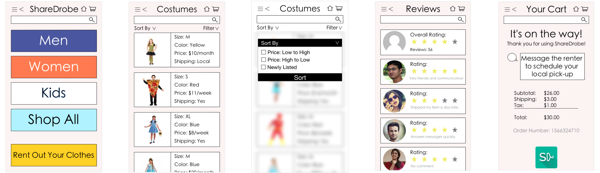

Have you ever bought something
and never wore it again?
ShareDrobe lets you rent out clothes for some easy cash!
Need a stylish gown for that wedding
without breaking the bank?
You can use ShareDrobe to rent items for a fraction
of the price!
Our team designed and finetuned a prototype that fulfills these needs.
Our app is
perfect for the chic n’ cheap.
Stress less, dress more. Sharedrobe!
Prototype Commercial
Interactive Prototype
Sharedrobe was conceptualized during my time at UCSD’s usability & information architecture course in the Summer of 2017. The class held no specific themes, but students were encouraged to ideate solutions that impacted our age group because the user testing would be performed on other classmates. I worked in a team of 8 and used human centered design techniques to construct our solution into a mobile prototype.
My Role:
Content Strategist: I focused on questions like what content can we offer to meet our
stakeholders' expectations? How many features are appropriate and what form should it take? What style or
tone should it have?
User Researcher and Designer: I was responsible for interviewing users and incorporating
their feedback into our prototypes.
Site Strategist: I designed the structure and organization of the prototype. This was done
by prioritizing various goals of the solution and sketching layouts that facilitated quick completion of
user objectives.
Our first task was to create a team name and logo. We pitched several possible names and voted on our favorites. The top two were Aeonian and Goobs, where Aeonian is the greek word for eternal and Goob is a synonym for dork. We decided to combine the two since we were all dorky and we hoped to get along forever. Hahaha who am I kidding; we just chose to combine the two because the name sounded cool and funny.
Team!!!
Each member was responsible for creating 4 sketches of possible team logos. We gave feedback on each other’s sketches, then created a digital version of our favorite of the four. Lastly we voted on our favorite digital logo.
My Logo Sketches
I chose the fox logo because they are a symbol for eternal life in Japanese culture and I thought it complemented the meaning behind our name. As seen in the iterations below, I focused on making the design more minimalistic and vector-like so that it could be easily remembered.
Logo Iterations

We focused on brainstorming ideas to help college students because, as students ourselves, we may have some relatable user needs and frustrations. We composed a list of about 25 ideas and voted on our favorites once again. The top 4 ideas were:
- An app which allows people to rent out their clothes to others for a small price.
- A subscription service where users get unlimited rides within a designated radius.
- A ride sharing app where drivers on the way to school can pick up other students.
- An app that quickly matches you with a roommate within your community.
The clothing rental app idea was the most popular amongst the group so we began creating personas and storyboards that depicted common scenarios where our app would come in handy. My storyboards focused on scenarios in which the user needed clothes for one time occasions like at graduation, prom, halloween and picture day
Personas/Storyboards

Our three main competitors are Le Tote, Rent the Runway, and Mr. Mrs.
Collection. Le Tote and Mr. Mrs. Collection were very similar in that they were both subscription based
services where the users don’t get to choose the clothes they rent.
Instead, the users fill out a style survey and get a clothing package which is picked out by employees.
Although these two are clothing rental services, they are vastly different from our idea because we rely on
the user base to rent clothes
to each other, rather than purchasing the clothes ourselves to rent out as a service.
Rent the Runway is somewhat similar to our idea since the service allows users to pick out
specific clothes to rent; however, their target user base is geared more towards women in their late 20’s,
as shown by the styles offered and
the exclusive female clothing selection. Regardless, the competitive analysis gave us insight on several
features that we should integrate into the app like a rating system, a third party quality control policy
and a messaging platform.
Competitive Analysis

Each member was responsible for creating a paper prototype. We voted for our favorite two, which we then used for user testing. Mine and Emma’s came out top.
Emma's Paper Prototype


My Paper Prototype

Our team split into two groups
to test Tony's and Emma's prototypes. The main
feedback that we got was that…
Emma's:
- The rent out your clothes page doesn’t exist.
- The product page should include how far the seller lives from your location.
- The subcategory dropdown menu can get very cluttered. It’d be more intuitive to just make pages dedicated to the sub categories.
- The current rentals page should include how many days left for each item to save the user a click.
Tony's:
- Navigating the different categories is slightly confusing. This can be improved by making directories and sub directories.
- A sidebar would make it easier to access useful functions like “Add Listings.”
- A dropdown menu to set distance/sizes would be easier to navigate to rather than having to go all the way into settings to change it.
- The messaging should include the product picture.
Usability Testing

The feedback showed that users liked the simplicity of the interface depicted in Emma’s prototype, but it lacked features and some pages were overly simplistic. It was also established that my prototype was slightly overwhelming to the user since there were so many options on each page, but they did liked how comprehensive it was. We decided to combine elements from both prototypes and revamped several pages to reflect all of the feedback.
Group Work

Revisions

We worked on the logos together and came up with several digital mockups. As we proceeded with the iterative process, we realized that we didn't want the words "Sharedrobe " to be included in the logo. We also realized that a hanger can be rotated to look like a D.
Logo Ideation
Final Logo Progression
We began translating the paper prototypes into a low fidelity mockup with Adobe XD. I was responsible for the pages highlighted in green.
Lofi Wireframes

After the digital template was complete, we moved on to converting it into a functional high fidelity prototype. There weren't any drastic changes, but we did flush out and refine many of the pages.
Several Iterations Later
Interactive Prototype
This class refined my skills in UX & UI design. It also broadened my experience in prototyping, vector design, and user testing. Although I didn’t talk about it in this case study, this course also had a concurrent portfolio project where I built this website from scratch on top of Bootstrap’s framework. I really appreciate the professor and teacher assistants for helping me debug the many problems that I encountered while constructing this portfolio. I’m extremely pleased with it and I intend to use these newly acquired skills for my future projects. Thanks for reading.

D4SD Hackathon
I competed in a city wide design competition to improve transportation in San Diego during Fall 2017.
View Case Study
Birch Aquarium
Designing an exhibit in the Birch Aquarium at the Scripps Institution of Oceanography to teach people about bubbles.
View Case Study